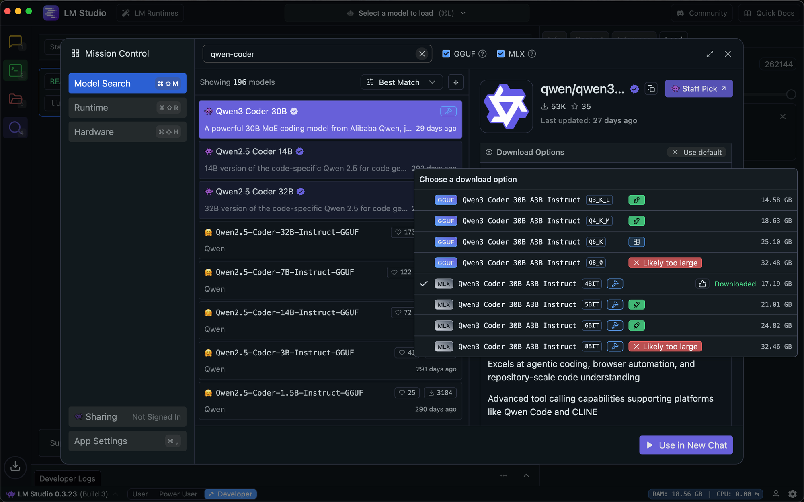
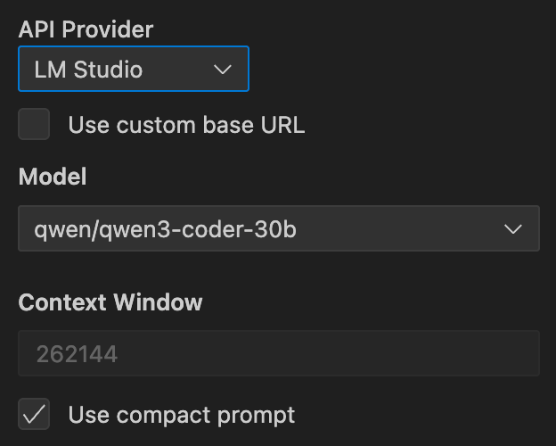

Cline + LM Studio: the local coding stack with Qwen3 Coder 30B
For the first time, local models are powerful enough to run Cline effectively on a laptop.
You can now run Cline completely offline. No API costs, no data leaving your machine, no internet dependency. Just you, your laptop, and an AI coding agent that can analyze repositories, write code, and execute terminal commands -- all while you're on a boat in the middle of the ocean.
The stack is simple: LM Studio provides the runtime, Qwen3 Coder 30B provides the intelligence, and Cline orchestrates the work. Together, they create a local coding environment that's both powerful and private.
An inflection moment
Local models have crossed a threshold. Qwen3 Coder 30B, especially in its optimized MLX format on Apple Silicon, delivers performance that's genuinely useful for real coding tasks. This isn't a toy or a proof of concept – it's ready for coding agents and it can be run entirely on your hardware.
The model brings 256k native context, strong tool-use capabilities, and repository-scale understanding. Combined with Cline's compact prompt system (designed specifically for local models at 10% the length), you get an agent that can handle substantial coding tasks without ever touching the cloud.
What you need
The setup is straightforward:
- LM Studio for model hosting and inference
- Cline for VS Code
- Qwen3 Coder 30B as your model
For Mac users with Apple Silicon, the MLX build is optimized for your hardware. Windows users (& everyone else) get excellent performance with the GGUF build. LM Studio automatically suggests the right format for your platform.
Setting up LM Studio
Start by downloading the model. In LM Studio, search for "qwen3-coder-30b" and select Qwen3 Coder 30B A3B Instruct. The platform will recommend MLX for Mac and GGUF for Windows – both work excellently.
Choose the right quantization depending on your hardware. For my 36B RAM Mac, this meant the 4-bit quantized model
For local models, quantization is the process of reducing the precision of a model's weights (numbers) to a smaller set of integers or lower-precision floating-point values, which makes the model smaller in file size and memory, faster to run, and thus more feasible to use on consumer-grade hardware. While this creates a trade-off between precision and performance, sophisticated techniques aim to minimize accuracy loss, allowing users to run powerful AI models like large language models (LLMs) on their personal computers.

Once downloaded, head to the Developer tab. Select your model, load it, and toggle the server to Running. The default endpoint is http://127.0.0.1:1234.
Configure these critical settings:
- Context Length: Set to 262,144 (the model's maximum)
- KV Cache Quantization: Leave unchecked
The KV cache setting is important. While it can be an optimization for some processes, it will persist context between tasks and create unpredictable behavior. Keep it off for consistent performance.
Configuring Cline
In Cline's settings, select LM Studio as your provider and qwen/qwen3-coder-30b as your model. Don't set a custom base URL if you're using the default local endpoint.
Match your context window to LM Studio's setting: 262,144 tokens. This gives you maximum working space for large repositories and complex tasks.
Enable "Use compact prompt." This is crucial for local models. The compact prompt is roughly 10% the size of Cline's full system prompt, making it much more efficient for local inference. The tradeoff is that you lose access to MCP tools, Focus Chain, and MTP features, but you gain a streamlined experience optimized for local performance.

Performance characteristics
Qwen3 Coder 30B performs well on modern laptops, especially Apple Silicon machines. The MLX optimization makes inference surprisingly fast for a 30B parameter model.
Expect some warmup time when first loading the model. This is normal and only happens once per session. Large context ingestion will slow down over time -- this is inherent to long-context inference. If you're working with massive repositories, consider breaking work into phases or reducing the context window.
The 4-bit quantization strikes an excellent balance. If you have memory headroom and want slightly better quality, 5-bit or 6-bit are available options. For most users, 4-bit provides the best experience.
The offline advantage
This setup enables truly offline coding. Your laptop becomes a self-contained development environment where Cline can analyze codebases, suggest improvements, write tests, and execute commands -- all without any network dependency.
The privacy implications are significant. Your code never leaves your machine. For sensitive projects or air-gapped environments, this local stack provides capabilities that simply weren't possible before.
The cost implications are equally compelling. No API tokens, no usage meters, no surprise bills. Once you've downloaded the model, everything runs locally at no additional cost.
When to use the local stack
Local models excel for:
- Offline development sessions where internet is unreliable or unavailable
- Privacy-sensitive projects where code can't leave your environment
- Cost-conscious development where API usage would be prohibitive
- Learning and experimentation where you want unlimited usage
Cloud models still have advantages for:
- Very large repositories that exceed local context limits
- Multi-hour refactoring sessions that benefit from the largest available context windows
- Teams that need consistent performance across different hardware
Troubleshooting
If Cline can't connect to LM Studio, verify the server is running and a model is loaded. The Developer tab should show "Server: Running" and your selected model.
If the model seems unresponsive, confirm "Use compact prompt" is enabled in Cline and "KV Cache Quantization" is disabled in LM Studio. These settings are critical for proper operation.
If performance degrades during long sessions, try reducing the context window by half or reloading the model in LM Studio. Very long contexts can strain local inference.
Getting started
Download LM Studio from https://lmstudio.ai and install Cline for VS Code. Search for Qwen3 Coder 30B A3B Instruct, download the 4-bit version, start the server, and configure Cline to use the local endpoint with the compact prompt enabled.
Your offline coding agent is ready.
Ready to code without limits? Download Cline and experience local-first AI development. Share your offline coding victories with our community on Reddit and Discord.